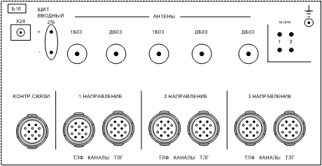

Тема: «Радиорелейная станция Р-415».
Занятие №2. Состав комплекта радиорелейной станции Р-415.
1. Состав комплекта
радиорелейной станции Р-415.
2.
Принцип работы станции по структурной схеме.
Учебные
и воспитательные цели:
1. Изучить состав комплекта
радиорелейной станции Р-415, принцип работы станции по структурной схеме.
2. Закрепить у личного
состава полученные знания и навыки.
3. Совершенствовать на
практике полученные знания и навыки.
4. Воспитывать у личного
состава бережное отношение к военной технике
и имуществу.
Место: класс
связи.
Метод:
рассказ, показ, тренировка.
Время: 50
мин.
Учебно-материальное обеспечение:
Литература:
1. Инструкция по эксплуатации радиорелейной станции Р-415.
2. Электронное учебное пособие «Радиорелейная станция Р-415».
ТСО:
1. Радиорелейная станция Р-415
- 1 ед.
2. Электронный тренажер
«Радиорелейная станция Р-415».
РАСЧЕТ УЧЕБНОГО
ВРЕМЕНИ
|
№ п.п. |
Содержание занятия |
Время (мин) |
||||||||||||||||||
|
1. |
Вступительная часть - Принимаю доклад о
готовности взвода к занятию. - Проверяю наличие личного
состава, внешний вид, готовность к занятию. - Довожу тему, цели,
учебные вопросы, литературу для самостоятельного изучения учебного материала
и ТСО, порядок проведения занятия, напоминаю меры по ТБ при работе на средствах связи. - Провожу контрольный опрос
по ранее изученному учебному материалу. |
5 5 |
||||||||||||||||||
|
2. |
Основная часть
Учебные вопросы: 1. Состав комплекта радиорелейной станции Р-415 Радиорелейная станция включает
в себя приемопередающую аппаратуру, аппаратуру каналообразования, аппаратуру
контроля и управления, специальные устройства, первичные и вторичные
источники питания, систему жизнеобеспечения, антенно-мачтовые устройства,
оконечные устройства, вводно-коммутационное и кабельное оборудование. В составе радиорелейной
станции в зависимости от варианта исполнения, некоторые блоки отсутствуют
согласно комплекту поставки. Приемопередающая аппаратура Синтезатор частот Б02 предназначен для образования рабочих частот передающего
и первого гетеродина приемного устройства радиорелейной станции, пуска и
контроля работы АНФ, выдачи команд на перестройку умножителей частоты и
фильтров приемника. Блок Б02 включает в себя синтезатор частот
возбудителя и синтезатор частот гетеродина. Диапазон частот СЧВ - 80-119,95 мГц. Диапазон частот СЧГ - 92-131,95 мГц. В блоке Б02 размещены следующие основные элементы:
ЧМГ (СО201, СО201-1), ГУН (СО202, СО202-1), УУ (СО203, СО203-1), ГОЧ (СО204),
два ФД (СО205, СО205-1) и УП (СО206). Блок Б02 содержит два цифровых
синтезатора частот. Один из них (СЧВ) является возбудителем передающего
устройства, другой (СЧГ) - гетеродином приемника. Блоки приемопередатчиков (БПП) 1Б03, ДБ03 предназначены для выделения принятых антенной
частотно-модулированных ВЧ сигналов корреспондента и их демодуляции, а также
для формирования мощных ВЧ сигналов передатчика в диапазонах частот 80-120,
390-430 мГц. БПП состоит из приемного и передающего трактов, с
общими для обоих трактов узлами ИПМ и ФЧР (приемное и передающее плечи). Блок уплотнения каналами (БУК) предназначен для организации двух ТЛФ и двух ТЛГ
каналов. БУК имеет две модификации Б17 и Б17-1. Модификация Б17-1
предназначена для организации встречной работы с радиостанцией Р-405М по ТЛФ
и ТЛГ каналам. Аппаратура контроля и управления Блок контроля и управления (БКУ) Б01-1 предназначен для управления аппаратной стойкой, для
установки режимов работы и контроля работоспособности радиостанции. БКУ обеспечивает согласование приемных и передающих
уровней аппаратуры уплотнения и приемопередающего устройства в различных
режимах, управление дуплексным и симплексным режимами работы передатчика, установку
нормальной и пониженной девиации, установку нормальной или пониженной
мощности передатчика, включение и выключение аппаратуры радиорелейной станции
и сигнализацию подачи напряжения питания, автоматический контроль,
дистанционное управление КВ и УКВ передатчиками в симплексном и дуплексном
режимах, подачу обобщенного сигнала исправности на узел связи, индикацию ВЧ
уровней БПП и НЧ уровней группового тракта, дистанционное управление с ПДУ. Пульт переключения (ПП) Б18 предназначен для коммутации цепей блоков БПП. Б18
обеспечивает подключение одного из двух блоков в двухлитерной стойке. В ПП находится счетчик моточасов, учитывающий время
работы станции. На передней панели ПП размещены органы управления,
счетчик моточасов, таблица для оперативной записи позывных, рабочих и
резервных частот, ручка для переноски пульта. Пульт оператора (ПО)
Б05-2 предназначен для обеспечения
коммутация телефонных и телеграфных каналов, приходящих со стоек аппаратных
двух направлений, сигнализации отказов и пропадания внешней сети, организаций
служебной связи. ПО обеспечивает: 1)коммутацию двух телефонных и двух телеграфных
каналов стоек аппаратных двух направлений связи; 2)подключение аппаратуры передачи данных (УЦС); 3)подключение специальной аппаратуры; 4)громкоговорящую служебную связь (ГГС) по трем из
шести местных и служебных линий, громкоговорящую внутреннюю связь между
оператором кузова и кабины, громкоговорящую радиосвязь по радиостанции из
кузова или кабины; 5)сигнализацию отказов стоек аппаратных двух
направлений связи и посылку сигналов отказов стоек на узел связи, а также
сигнализацию пропадания внешней сети; 6)подключение микротелефона МТ-50 ПО к блокам
уплотнения каналами 2-х направлений связи. В
состав ПО входят: 1)субблок контроля связи С0501-1; 2)субблок служебной связи С0502-1, ПО
работает совместно с пультом связи водителя ПСВ. ПО состоит из следующих
функциональных узлов: 1)
элементов коммутационного поля; 2)
элементов переговорного устройства; 3)элементов сигнализации отказов. Элементы
коммутационного поля предназначены для коммутации ТЛФ и ТЛГ каналов. К
элементам коммутационного поля каналов относятся гнезда НАПРАВЛЕНИЕ I,II соответственно для первого и второго
направлений связи ТЛФ и ТЛГ каналов. На
гнезда КАНАЛЫ выведены четырехпроводные низкочастотные окончания ТЧ каналов
блоков уплотнения каналами (БУК) станции. На
гнезда СОЕД.ЛИН. выведены четырехпроводные окончания абонентов (каналы ТЧ)
со щита вводного Б16-1. На
гнезда АПД для II направления выведены
четырехпроводные информационные входы-выходы УЦС; для I направления - вход-выход БПП. На
гнезда СА I направления выведены
четырехпроводные окончания специальной аппаратуры. Коммутация
каналов в оконечном режиме, а также переприем по низкой частоте осуществляется
коммутационными вилками-перемычками (8-ми штырьковыми) и шнурами, последние
входят в комплект ЗИП станции- Переговорное
устройство предназначено для организации громкоговорящей связи между
оператором кузова и кабины, для организации громкоговорящей связи
по радиостанции Р-105М (Р-159М)
с ПО или ПСВ и для организации громкоговорящей связи по служебным линиям с
ПО. Переговорное устройство состоит из следующих
функциональных частей: 1)микротелефонных усилителей ПСВ и ПО, усилителя низкой частоты, подавителя шумов,
дифференциальной системы, дешифратора, источника опорного напряжения,
стабилизатора, расположенных в субблоке служебной связи С0502-1; 2)трех приемников индукторного вызова, генератора
индукторного вызова, коммутатора служебных линий, коммутатора звукового
сигнала (ЗС), расположенных в субблоке контроля связи С0501-1, 3)элементов управления и индикации, расположенных на
передней панели ПО; 4) громкоговорителя,
расположенного на шасси ПО. При
кратковременном нажатии кнопки ПСВ на ПО или кнопки ПО установится переговорный режим между ПО
и ПСВ. Для передачи необходимо нажимать
тангенту на микротелефоне. На ПО при кратковременном нажатии кнопки Р-105М
(Р-159М) высвечивается индикатор
Р-105М (Р-159М) РАБ., а на ПСВ - индикатор Р-105М (Р-159М) ЗАНЯТО и
устанавливается режим работы "ПО - Р-105М (Р-159М)". На ПСВ
при кратковременном нажатии
кнопки Р-105М (Р-159М) 'высвечивается индикатор Р-105М
(Р-159М) РАБОТА, а на ПО - Р-105М
(Р-159М) ЗАНЯТО и устанавливается
режим работы "ПСВ - Р-105М (Р-159М)". Режим
ПСВ - Р-105М (Р-159М) может быть снят только установкой режима
"ПСВ-ПО" с ПСВ, а также включением режимов работы по двум направлениям
на ПО. При нажатии
одной из кнопок НАПРАВЛЕНИЕ I,II засвечивается индикатор над данной кнопкой и
микротелефон МТ-50 подключается. При
поступлении служебного вызова на пульт оператора со стороны радиоканала,
через блок уплотнения каналами на пульте оператора мигает индикатор,
соответствующий направлению, по которому пришел вызов (НАПРАВЛЕНИЕ I или НАПРАВЛЕНИЕ II). При
кратковременном нажатии кнопки ЛИН, на ПО и одной из кнопок СЛУЖЕБНЫЕ ЛИНИИ
1, 2, 3 высвечиваются индикаторы над этими кнопками и установится
переговорный режим между ПО и соответствующей линией. Элементы
сигнализации отказов предназначены для сигнализации и индикации стоек
аппаратных и выдачи их на узел связи. К
элементам сигнализации отказов относятся: 1)индикаторы ОТКАЗ; 2)кнопка ВЫКЛ. ЗС; 3)субблок- С0501-1. При
наличии сигнала отказа и при выключении питания стойки соответствующий
индикатор ОТКАЗ высвечивается, а также срабатывает звуковая сигнализация.
Звуковая сигнализация может быть снята до устранения отказа кнопкой ВЫКЛ.ЗС. Пульт
связи водителя (ПСВ) предназначен
совместно с ПО для организации служебной связи между оператором кузова и
кабины, а также связи из кабины по радиостанции Р-105М (Р-159М). ПСВ
состоит из двух литых половин из алюминиевого справа, на одной из которых
расположены громкоговоритель и органы управления и индикации. К
органам управления и индикации относятся: 1)тумблер ПИТ. служит для включения напряжения питания
ПО; 2)кнопка ПО служит для включения режима служебной
связи "ПО-ПСВ"; 3)кнопка Р-105М (Р-159М) служит для включения режима
служебной связи "ПСВ-Р-105М (Р-159М)"; 4)регулятор ГРОМКОСТЬ служит для задания уровня
громкости переговорного устройства; 5)индикатор ПИТ. обеспечивает индикацию наличия
питания на ПО; 6)индикатор ПО индицирует включение режима "ПО -
ПСВ"; 7)индикатор Р-105М (Р-159М) РАБОТА индицирует
включение режима "ПСВ - Р-105М (Р-159М)"; 8)
ИНДИКАТОР Р-105М (Р-159М) ЗАНЯТО индицирует включение режима "ПО -
Р-105М (Р-159М) ". Габаритные
размеры блока: 200x135x86 мм. Масса 1,2 кг. Пульт частотной адаптации (ПЧА) Б06-5 предназначен для обеспечения ведения связи в
режиме с устройством частотной адаптации. Встроенные индикаторные приборы, прибор П-321, Ц-4342-М1-контрольно-измерительные приборы. Специальные устройства Шкаф
аппаратный Б30-1 (Б30-2) состоит из
ряда функциональных блоков (ячеек), объединенных общим шкафом. Блоки
вставляются в шкаф по направляющим из полиамида и крепятся винтами к
переднему верхнему и нижнему профилям. Шкаф выполнен в виде каркаса,
закрытого крышками с вентиляционными отверстиями (на верхней и нижней
крышках). Электрический
контакт между съемными блоками, ячейками и шкафом осуществляется посредством
разъёмов. Монтажные
жгуты располагаются по боковым и задним стенкам внутри шкафа. Устройство цифрового сопряжения Б33 предназначено для обеспечения передачи бинарной
информации (АПД). Блок частотной адаптации (БЧА) предназначен для ведения связи в адаптивном режиме (частотная
адаптация). Первичные
и вторичные источники питания Первичные источники питания Внешняя сеть переменного тока 220 В 50 Гц; Электроустановка
ЭУ-66-8-О/230; Электроагрегат АБ-1-230-В (АБ-2-О/230-М2); АКБ
4х5НКЛБ-70. Вторичные источники питания Блок питания Б04 предназначен для питания аппаратной стойки стабильными напряжениями
+5, +6,3; минус 6,3; +12,6; минус 12,6; +27 В. Блок выполняется в двух
вариантах. При питании от сети постоянного тока напряжением +27 В +2,7 В (в
дальнейшем обозначенном +27 В нестаб.) применяется блок 27БО4. Универсальный блок питания БО4 может
питаться от сети постоянного тока с напряжением + 27 +2,7 В, от сети
переменного тока - однофазной 220 В или трехфазной 380 В с изолированной
нейтралью. Выходные параметры блока приведены
в таблице 1.
таблица
1.
Состав блока приведен в таблице 2. таблица 2.
Фильтр сетевой Б21 предназначен для подавления радиопомех, распространяющихся по
проводам питания станции, от сети 220 В частотой 50 Гц. Блок
резисторов предназначен для
выравнивания зарядных токов в параллельных цепях аккумуляторных батарей
4х5НКЛБ-70, включенных по две батареи последовательно. Включение резисторов
в цепи заряда позволяет от выпрямителя BO9 осуществлять заряд параллельно включенных батарей
током по 18 А каждую. Блок
состоит их 4-х резисторов, включенных попарно параллельно, т.е. в каждую
цепь заряда включается сопротивление 0,2 Ом. Основой
блока является алюминиевая пластина, к которой крепятся резисторы и
монтажная колодка. Сверху резисторы закрыты алюминиевой крышкой. Габариты
блока 300x190x70 мм. Масса
- 2,7 кг. Щит коммутации питания Б31 предназначен для подключения основных и резервных
источников электроэнергии к потребителям и герметизации перехода
электрических цепей из агрегатного отделения в аппаратное. Выпрямитель Б09 предназначен для получения выходного напряжения 27 В при работе
от сети 220 В частотой 50 Гц. Блок распределения питания (БРП) Б-35 предназначен для подключения моноблоков и
аппаратуры уплотнения к первичным источникам питания. Ввод
силовой (ВС) предназначен для
подключения станции к внешним источникам однофазного напряжения 220 В, 50 Гц
и подключения штыря заземления схемы защиты обслуживающего персонала от
поражения электрическим током. Силовой
кабель от источника электроэнергии подключается к вилке "220 В, 50
Гц". Кабель штыря заземления схемы защиты подключается к розетке
ЗАЗЕМЛЕНИЕ РБП. С помощью розетки ХЗ ВС соединяется с фильтром сетевым. К
клемме Х4 подключается отвод шины заземления станции. Выпрямитель зарядный Б15 предназначен
для заряда АКБ радиостанции Р-159. Система жизнеобеспечения В
состав системы жизнеобеспечения входит: ФВУА-100А, ОВ-65, ДП-5Б, ВПХР-М,
ИМД-21Б, освещение, вентилятор приточный и другое оборудование. Антенно-мачтовые
устройства Антенна МБ11 (1Б11) предназначена для направленного излучения и направленного
приема радиосигналов в метровом диапазоне. Коэффициент стоячей волны (КСВ) антенны - не более
1,6. Коэффициент усиления по отношению к изотропному излучателю - не менее 7
дБ. Ширина диаграммы направленности: в плоскости "Е" - 60-650;
в плоскости "Н" - 103-1080. Антенна обеспечивает работу
при скорости ветра до 30 м/с и сохраняет прочность при скорости ветра до 50
м/с. Направленная антенна МБ11
(1Б11) представляет собой логопериодическую антенну (число вибраторов 5 (8)). Антенна ДБ11
предназначена для направленного излучения и направленного приема
радиосигналов в дециметровом диапазоне. КСВ антенны - не более 1,6. Коэффициент усиления по
отношению к изотропному излучателю - не менее 11 дБ. Уровень боковых
лепестков - не более минус 10 дБ. Ширина диаграммы направленности: в
плоскости "Е" - 28-430; в плоскости "Н" -
58-700. Антенна обеспечивает работу при ветровых нагрузках до 30
м/с и сохраняет прочность при скорости ветра до 50 м/с. Антенна представляет собой
синфазную решетку, состоящую из двух Z-излучателей, плоского рефлектора и делителя
мощности. Антенна 1Б12-1 предназначена для всенаправленного излучения и всенаправленного
приема радиосигналов в метровом диапазоне. КСВ антенны - не более 2. Антенна
обеспечивает работу на ходу при ветровых нагрузках до 30 м/с и сохраняет
прочность при скорости ветра до 50 м/с. Антенна 1Б12-1 представляет
собой коаксиальную антенну с компенсатором. Антенна ДБ12
предназначена для ненаправленного излучения и ненаправленного приема
радиосигналов в дециметровом диапазоне. КСВ антенны - не более 1,6. Антенна
обеспечивает работу на ходу при ветровых нагрузках до 30 м/с и сохраняет
прочность при скорости ветра до 50 м/с. Антенна ДБ12 представляет собой
коаксиальную антенну, состоящую из верхнего и нижнего плеч,
короткозамыкателя, изоляторов, трубки, внутри которой проходит коаксиальный
кабель РК-75-4-12, и несущей штанги. В комплект станции входит мачта и подъемное
устройство. Мачта состоит из десяти колен. При работе в метровом
диапазоне волн мачта разворачивается на девять колен, причем верхнее колено
мачты в этом случае устанавливается деревянное. Оно имеет длину 2 м и
представляет собой изолятор. Это сделано для того, чтобы не искажать характеристику
направленности вертикальной антенны. Остальные колена мачты представляют
собой дюралюминиевые трубы длиной 1,6 м. С одного конца каждая труба имеет
цилиндрический наконечник. Посредством этих наконечников колена мачты
соединяются друг с другом. Подъемник мачты состоит из двух дюралюминиевых
колен, соединенных между собой при помощи металлической вставки, на которой
размещаются задерживающий механизм (для удержания приподнятой мачты) и ролик
для направления троса лебедки. Лебедка укреплена на нижнем колене подъемника
и служит для облегчения подъема мачты. Снизу подъемник имеет опорную плиту.
На верхнем конце верхнего колена подъемника крепится направляющая втулка,
через которую проходят колена мачты. Подъем мачты осуществляется путем наращивания
ее колен снизу в подъемном механизме. Полная высота мачты при установке
десяти колен составляет 16,5 м. Удерживается мачта в вертикальном положении
тремя ярусами оттяжек. Каждый ярус состоит из четырех оттяжек, расходящихся к
кольям под углом 900. Колья для оттяжек вбиваются на расстоянии 8
м от основания мачты. В развернутом положении мачта может поворачиваться
вокруг своей оси. Лебедки и задерживающие механизмы подъемников закрываются
защитными чехлами. На мачте могут устанавливаться как направленные, так и ненаправленные
антенны. На подвижных объектах ненаправленные антенны
устанавливаются с помощью амортизатора, который постоянной крепится к
механизму подъема. Такелаж мачты состоит из длинных летних и коротких
зимних кольев, двенадцати оттяжек с деталями крепления к мачте и кувалды. Все
оттяжки выполнены из стального троса диаметром 2 мм. Нижние концы оттяжек для
удобства развертывания мачты наращиваются лаглинем и имеют деревянные планки,
при помощи которых регулируется длина оттяжек. На концах оттяжки имеют карабины
или крючки для крепления их к мачте и к кольям. Для удобства развертывания и
свертывания оттяжек имеются три специальные металлические рогульки с
ручками. Нагрузка Б22 предназначена для создания эквивалента антенны в
режимах контроля и настройки. Оконечные устройства Микротелефонная гарнитура
МТ-50 предназначена для ведения переговоров по каналам связи. Вводно-коммутационное и кабельное оборудование (ВКО
и КО) В комплект ВКОиКО входит
щит вводный, внутриузловой соединительный кабель П-269-2х4+1х2, ПТРК 5х2,
ТТВК 5х2, вводный щиток ВЩ-53 (ВЩ 5х2), кабельная арматура ВП-1, ВП-2, ВП-5,
полевой кабель П-274М, силовой кабель КРШС 4х6, катушки под кабель, станок
для размотки кабеля и другое оборудование согласно комплектации. Щит
вводный Б16-1 предназначен для
подключения к станции полевых кабелей связи типа ПТРК 5x2 и передачи по ним
сигналов 4-х телефонных каналов, 4-х телеграфных каналов и сигналов
исправности радиорелейной линии, а также подключения антенн двух направлений
связи к приемопередатчикам станции с помощью высокочастотных кабелей типа
РК75-9-13. Шит
вводный с внешней стороны имеет пять (ХЗ, Х4, Х5, Х6, Х17) полумуфт
аппаратных типа АП-5, две клеммы (Х10, XII) для подключения одной местной служебной линии,
один разъем (Х18) для подключения плафона освещения панели, клемму (Х16) для
подключения заземлителя станции, одну розетку с напряжением 27 В для
подключения лампы-фары или паяльника и два высокочастотных разъема (Х13,
Х14) для подключения антенных устройств станции. Назначение
контактов в полумуфтах АП-5 приведено на маркировочной таблице,
установленной в нише щита. С
внутренней стороны щит вводный имеет два низкочастотных разъема (XI, Х2) для соединения с пультом оператора Б05-2, один
разъем (Х7) для соединения с блоком распределения питания Б35, для
высокочастотных разъема (Х8, Х9) для соединения с приемопередатчиками стоек
аппаратных и одну клемму (Х15) для соединения блока с общей шиной заземления
станции. Конструктивно
щит вводный выполнен в виде отдельного блока, герметично закрепляемого в нише
люка правой боковой стенки кузова. Масса
блока - 6 кг; Габаритные
размеры 460x180x140 мм. Щит
вводный Б16-2 предназначен для подключения к станции
полевого кабеля связи ПТРК 5x2 и передачи по нему сигналов аппаратуры ЗАС на
спецкоммутатор, а также организации работы по двухпроводной схеме телефонных
аппаратов ТА-57 подключенных к клеммам АБОНЕНТ щита Б16-2 или из кабины
автомобиля. При
работе станции в режиме "СК" (переключатель S1 в положении СК) все цепи аппаратуры ЗАС
передаются на спецкоммутатор по кабелю ПТРК 5x2, подключенному к разъему Х6,
цепи, подходящие к разъемам Х2 (контакты 4, 5) и клеммы Х4, Х5 в это время
заземлены. При
работе станции с вынесенного телефонного аппарата (переключатель S1 в положении АБОНЕНТ или ТА-57) неиспользованные
цепи также заземляются. Щит
Б16-2 с внешней стороны имеет одну аппаратную полумуфту АП-5 (S6), две клеммы (Х4, Х5) и клемму (Х8) для
подключения заземлителя. С
внутренней стороны щит Б16-2 имеет разъем XI для соединения с пультом управления ПУ-ЗА
аппаратуры ЗАС; разъем Х2 для подключения телефонного аппарата ТА-57 и табло,
установленных в кабине автомобиля, разъем ХЗ для подключения к блоку распределения
питания и клемму Х7 для соединения блока с общей шиной заземления станции. Конструктивно
щит выполнен в виде отдельного блока, герметично закрепляемого в нише люка
левой боковой стенки кузова. Щит Б16-2 оборудован крышкой, имеющей
устройство, позволяющее производить пломбирование как при подключенных
кабелях ПТРК, так и отключенных. Масса
блока 3,5 кг; Габаритные
размеры 460x180x140мм.  Рис 1.
Линейный ввод 2. Принцип работы
станции по структурной схеме Принятый антенной высокочастотный
(ВЧ) сигнал через измеритель проходящей мощности (ИПМ) и приемное плечо
фильтра частотных развязок (ФЧР) поступает в приемник, где усиливается, преобразуется
в сигнал группового спектра и подается в БКУ. В БКУ сигнал группового спектра
усиливается и подается в аппаратуру уплотнения. Образованный в результате
уплотнения групповой сигнал поступает через БКУ на частотный модулятор
синтезатора частоты возбудителя (СЧВ). Промодулированный ВЧ сигнал
возбудителя, усиленный передатчиком БПП, через передающее плечо ФЧР и ИПМ
подается в антенну. Контрольные вопросы: 1. Доложите состав
комплекта радиорелейной станции Р-415? 2. Для чего предназначен
синтезатор частот Б02? 3. Для чего предназначены
блоки приемопередатчика 1Б03 и ДБ03? 4. Что входит в состав
аппаратуры каналообразования? 5. Для чего предназначена
аппаратура контроля и управления? 6. Доложите, что входит в
состав источников электропитания? 7. Для чего предназначена
антенна МБ11? 8. Что представляет собой
антенна ДБ11? 9. Что входит в комплект
ВКО и КО? 10. Доложите принцип работы
радиорелейной станции? |
35 |
||||||||||||||||||
|
3. |
Заключительная часть - Напоминаю
тему, цели, учебные вопросы. - Подвожу
итоги, выставляю оценки. - Отвечаю на вопросы. - Выдаю задание на
самостоятельную работу. - Даю команду на окончание
занятия. Задание на самостоятельную работу: ИЗУЧИТЬ
МАТЕРИАЛ: 1.
Электронное учебное пособие
«Радиорелейная станция Р-415». 2.
Учебник сержанта для войск связи. – М.: ВИ, 2010, с. 3.
Материал конспекта. ЗНАТЬ:
1. Назначение
радиорелейной станции, ТТД и её комплектацию. УМЕТЬ:
1.
Доложить изученный материал. Литература для подготовки руководителя к занятию: 1.Техническое
описание и инструкция по эксплуатации радиорелейной станции Р-415. 2. Электронное
учебное пособие «Радиорелейная станция Р-415». Детализированные вопросы для самостоятельного
изучения: 1.
Подготовка радиорелейной станции Р-415 к работе. |
5 |
||||||||||||||||||